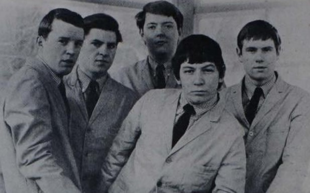

House of the Rising Sun turned an old folk warning into a snarling hit for The Animals.
They cut it in one take in 1964, with no idea it would become a global number 1.

Table of Contents
- From a Newcastle Club to a One-Take Recording
- A Traditional Song With No Single Author
- Chart Success, a Credit Dispute, and a Lasting Legacy
- FAQ
From a Newcastle Club to a One-Take Recording
Eric Burdon first heard the song from singer Johnny Handle in a Newcastle folk club.
The Animals worked it into their live set as a closer.
In May 1964, between tour stops with Chuck Berry, they booked a De Lane Lea Studios session.
Producer Mickie Most later played down his own role.
"It only took 15 minutes to make, so I can't take much credit," he said.
One Take, No Overdubs
Burdon sang lead, Valentine played guitar, Chandler played bass, Price played organ, and Steel drummed.
Steel later described the process plainly.
"We set up for balance, played a few bars for the engineer, and did one take," he said.
That mono take is the version still heard today.
The Traditional Roots of House of the Rising Sun
The tune is an American traditional song, passed down by ear long before it was written down.
Its oldest known printed lyrics appeared in Adventure Magazine in 1925.
"Rising Sun Blues," the oldest known recording, came from Tennessee musicians Clarence Ashley and Gwen Foster in 1933.
Folklorist Alan Lomax later taped a 1937 version sung by 16 year old Georgia Turner.
Leadbelly, Woody Guthrie, and Josh White all cut their own versions in later decades.
Early versions cast the narrator as a woman ruined by a brothel.
Male singers made it a gambling den instead.
How Dylan's Chords Reached The Animals
Bob Dylan recorded it on his 1962 debut album, learning the arrangement from Dave Van Ronk.
Guitarist Hilton Valentine took Dylan's chord sequence and played it as a rolling arpeggio instead.
That single change gave the record its cascading opening.
The band had also heard Nina Simone's version before shaping their own.
Chart Success, a Credit Dispute, and a Lasting Legacy
The single hit number 1 in the UK on July 9, 1964.
It hit number 1 in the US that September 5, holding the spot for three weeks.
At 4 minutes 29 seconds, it was the longest record to top the British charts at that point.
MGM wanted a shorter US cut, but Most insisted on releasing it full length.
A separate, edited version still circulated on some US pressings.
The Fight Over Songwriting Credit
Since the song was public domain, only its listed "arranger" could collect royalties.
The label said there was no room to credit all five, so Alan Price's name went on alone.
Price collected those royalties for decades, straining relationships in the band.
"If the Animals had stuck together instead of worrying about the money, we could have evolved more," Burdon said.
A Record That Changed British Invasion Music
This track is widely credited as the first major folk-rock hit.
It arrived months before The Byrds electrified Dylan's songs.
It was the first British Invasion US number 1 with no tie to The Beatles.
Burdon said Dylan later "went electric in the shadow" of the record.
It entered the Grammy Hall of Fame in 1999.
Frijid Pink took a cover to number 4 in the UK and number 7 in the US in 1970.
Alt-J covered it in 2017.
"It continues the folk process of taking a song, changing it, and passing it on," they said.
FAQ
Who wrote House of the Rising Sun?
Nobody knows.
It is a traditional American folk song with no confirmed author, first printed in 1925 and first recorded in 1933 by Clarence Ashley and Gwen Foster.
Is the song based on a true story?
There is no confirmed real house behind it.
Early versions cast it as a brothel with a female narrator, later reshaped into a gambling den in male-sung versions like the Animals'.
Why did only Alan Price get songwriting credit?
The label said there was no room to list all five members as arrangers, so Price's name went on alone.
He kept the royalties, which caused lasting tension in the band.
How long is the Animals' recording?
The UK single ran 4 minutes 29 seconds, the longest song to top the British charts at that point.
MGM trimmed a separate US edit down to 2 minutes 58 seconds.
Did the single reach number one?
Yes.
It hit number 1 in the UK on July 9, 1964, and number 1 in the US that September 5, holding the top spot for three weeks.
A song nobody could claim helped launch a sound the decade would chase.
The Animals proved a bar band could turn an old warning song into a global number 1.
It stands alongside My Generation and You Really Got Me among the toughest British Invasion records.
Read more about the band on The Animals artist page, where this remains their defining hit.
Back to the 1960smusic.net homepage to explore every genre of the decade.